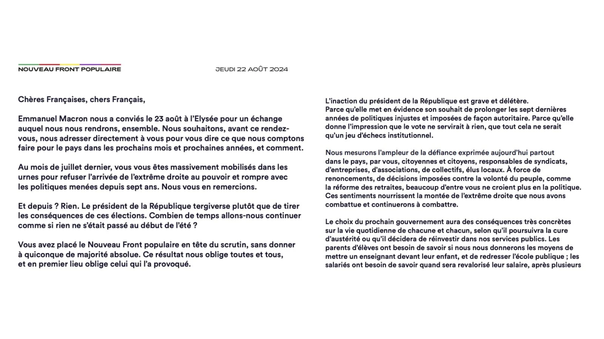
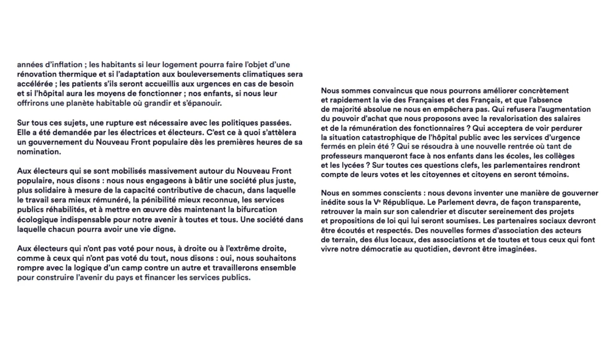
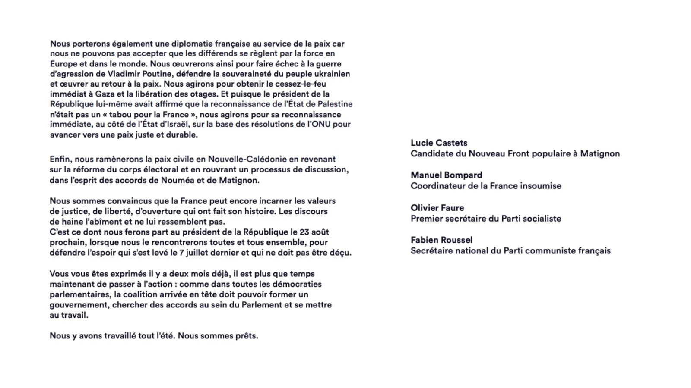

Lettre relayée
« Nous sommes prêts ». La lettre aux Françaises et aux Français du Nouveau Front populaire
Date indiquée par Facebook · 23 août 2024
Repères éditoriaux
Nous avons relayé la lettre du 23 août 2024 de Lucie Castets et des responsables du Nouveau Front populaire. Les trois pages du texte et les signatures figurent à la suite du visuel de présentation.
Texte conservé avec la publication
"Nous sommes prêts"
Lettre aux Français de Castets Lucie, Fabien Roussel, Marine Tondelier, Faure Olivier et Manuel Bompard



Sources
Archive rouge · export Facebook · AR-0002-FB-01308
À lire aussi · Construire un chemin d’avenir pour la France · Le lien d’origine